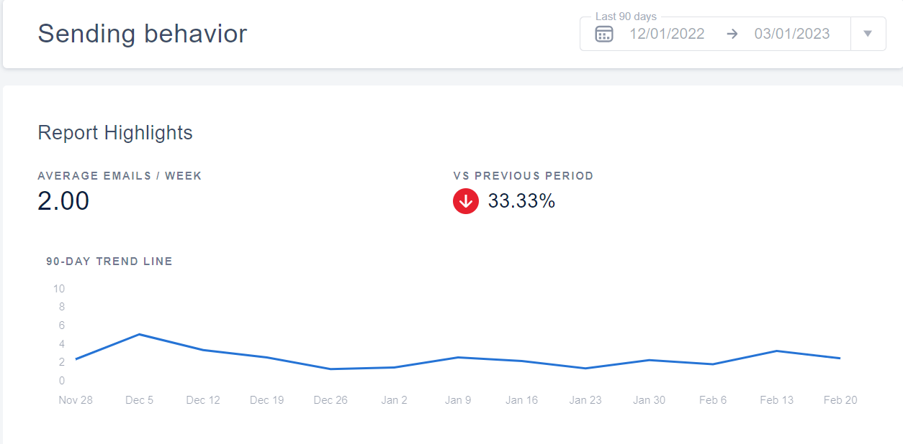
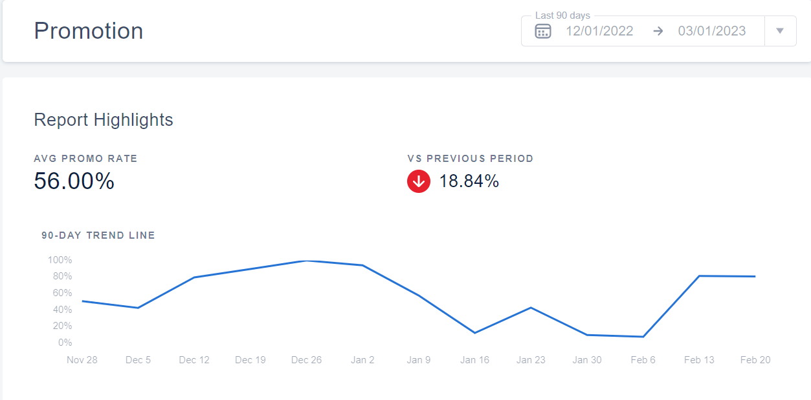
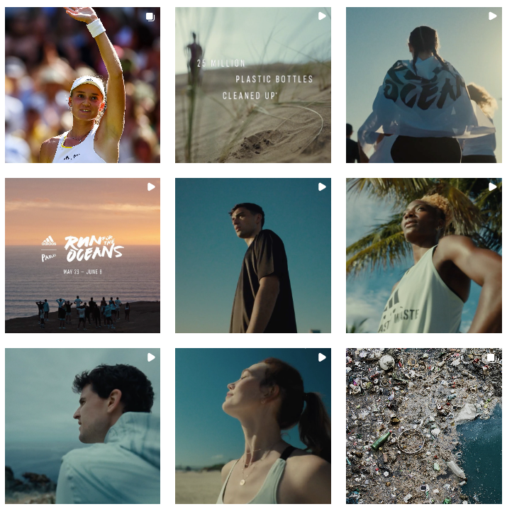

ADIDAS
Brand Marketing Analysis
Overview
About Adidas
Headquartered in Herzogenaurach, Bavaria, Germany, Adidas is a multinational corporation known as one of the most popular sports brands in the world that designs, develops, produces, and markets a wide range of sports clothing, footwear, and accessories. The brand was founded in 1924 by Adi Dassler and his brother Rudolf, hence the original name Gebrüder Dassler Schuhfabrik (“Dassler Brothers Shoe Factory”). However, in 1947, the two brothers split after their relationship went south, leading to Rudolf leaving and creating Puma, which later became one of Adidas’s competitors. In 1949, the brand was registered as ‘Adi Dassler adidas Sportschuhfabrik’ by Adi Dassler, marking the born of Adidas.


Adidas emphasizes that its core values are rooted in sports – that is, ‘through sports we have the power to change lives.’ This is also incorporated into the brand’s mission – ‘to be the best sports brand in the world’ and the stated attitude – ‘impossible is nothing.’
Strategically Creative
Adidas’ marketing strategy is to position the brand as the most innovative and stylish in the sports industry. The company has adopted a multi-channel approach to digital branding that includes social media, influencer marketing, email marketing, and e-commerce. Adidas’ digital marketing campaigns are known for their creativity and engaging content that resonates with its target audience. This approach has helped the brand to increase its visibility, brand recognition, and customer loyalty in the competitive sports industry.
Email Marketing
Too often, too many emails
Since July 26, 2022, when I first purchased a pair of Adidas shoes and registered an account on their website, they have sent me 139 emails, mostly one email at a time, but sometimes 2-3 emails on the same day when a special holiday/event is around the corner (days with more emails have darker color in the chart below), summing up to about 4-5 emails per week on average. From a customer’s point of view, this is way too often for email marketing. I believe the optimal frequency should only be about 2-3 emails per week at maximum to encourage purchases with discounts but not cheapen the brand.
Compared to the brand’s general sending behavior and promotion data from MailCharts it seems they are doing just the right amount on average.


CTA, with little personalization
Almost if not all of the emails I received from Adidas are CTAs (Call to Action – urging customers to make purchases, often with offers/discounts to make the deals more appealing). Most of these emails could be categorized into the following:
New items arrival
Member discounts
Holiday discounts
If it’s not for me being a college student living on a student budget, which makes me an economic shopper, these offers are no more than ordinary marketing emails. They are not highly personalized to me as a customer nor trying to get my attention on other aspects of the products other than prices. Given that I do receive more promotional emails than the brand’s average sending behavior as demonstrated above, this could possibly be because they know I would not buy anything at full price, hence the influx of discounts and promotions. That being said, I do appreciate their efforts in testing different subject lines and times of day. This may involve A/B testing as a methodology to determine the better elements for a more effective marketing email campaign.
Mail list & PII data
I believe Adidas builds its own mail list by giving out member discounts for those who register using their emails. This process is fairly easy as the sign-up window would pop up for anyone visiting their official website. By having this process simple and quick, Adidas can attain high quality and niche PII (Personal Identifiable Information) from potential and recurring customers who are actually interested in the brand and purchasing its products.
CAN-SPAM laws complied
The CAN-SPAM Act of 2003 (Controlling the Assault of Non-Solicited Pornography And Marketing Act of 2003) is a law managed by the Federal Trade Commission to set the rules and regulations for sending commercial emails. I believe Adidas is following this law at its best from what I can see:
- They don’t use false/misleading headers.
- They don’t use deceptive subject lines.
- They identify the message as an advertisement
- The opt-out option is clearly displayed at the bottom of each email
Strong Presence of Reviews
To assess the review presence of Adidas and its competitor - Nike, I looked at each brand’s website as well as Amazon, one of the largest third-party e-commerce site. Both Adidas and Nike have strong review presences on their e-commerce sites and Amazon, with average ratings generally between 4 and 5 stars. They share common themes in positive and negative reviews, with customers appreciating product quality, performance, and design, while expressing concerns about sizing and potential counterfeit items. Review volume for both brands is high on Amazon, indicating their popularity and social proof.
Website
Adidas has a strong presence of reviews on their e-commerce site, featuring reviews for most of their products, with average ratings ranging between 4 and 5 stars. Customer feedback often highlights product quality, comfort, and style as key factors driving satisfaction. Common issues mentioned in negative reviews include sizing inconsistencies and occasional product defects. Customers who have purchased products from their online store have the opportunity to leave a review, which can be seen by other online shoppers. This creates a transparent shopping experience and helps potential customers make informed decisions about their purchases.
Looking at Adidas’s competitor, Nike’s e-commerce site also features customer reviews for a majority of its products. The average ratings for Nike products tend to be between 4 and 5 stars, similar to Adidas. Positive reviews often praise product performance, innovation, and design, while negative reviews may mention sizing issues, durability concerns, and occasional customer service problems.
Amazon
Both Adidas and Nike have a substantial presence on Amazon, with thousands of products listed across various categories.
Adidas has a strong presence on Amazon, with average ratings for their products typically between 4 and 5 stars. Review volume is high, reflecting the brand’s popularity and social proof. Common themes in positive reviews include product quality, comfort, and design, while negative reviews often mention sizing issues and concerns about counterfeit products.

Nike also has a significant presence on Amazon, with a wide range of products available across different categories. The average rating for Nike products tends to be between 4 and 5 stars, similar to Adidas. Nike generally receives positive feedback for product performance, innovation, and design. However, negative reviews may mention sizing concerns, durability issues, and concerns about counterfeit products.

App Reviews
Adidas has a great app!
Good news: Adidas does have an app on both Google Play Store and App Store! As an Android user, I will focus more on the brand’s app for Android available to install on Google Play Store. The app has an average rating of 4.6 from 394,433 reviews, indicating overall great satisfaction from the majority of users.

Taking a closer look at this, analysis from AppBot shows that among the aforementioned number of reviews, there are 68,741 ones with text, making up an average rating of 3.9 stars. About two-thirds of these specific reviews rated 5 stars and imply positive sentiment toward the app. This is a pretty strong evidence that Adidas has been working well on building up and maintaining the connection with its customers in an effort to increase customer satisfaction and generate product reviews.
…but not as good as Nike’s :(
Nike also has their own app on Google Play Store with quite a stronger presence than that of Adidas. Nike’s app has an average rating of 4.5 stars from 694,836 - roughly the same as Adidas but with almost twice as many users as Adidas! Analysis from AppBot also shows a more positive reaction from the users: 225,955 reviews with text that make an average rating of 4.3 stars (compared to 68,741 text reviews of 3.9 stars on average for Adidas). So, Adidas might have done a great job, but Nike definitely has done a way better job.


Customer Insight from Reviews
Valuable for various areas of improvement
Customer reviews oftentimes could provide valuable insights into product performance, customer preferences, and potential areas for improvement. By breaking down the average ratings by product category and subcategory, it would be possible to identify which products were resonating well with customers and which were underperforming. This analysis could help Adidas focus on improving lower-rated products or reevaluating its product assortment. Additionally, comparing Adidas’ average ratings with those of its competitors could provide a better understanding of the brand’s performance within the market. If Adidas’ average ratings were higher than its competitors’, this could indicate that the brand is successfully meeting or exceeding customer expectations. Conversely, if Adidas’ average ratings were lower than its competitors’, it might suggest that there are areas where the brand could improve to better compete in the market. Furthermore, analyzing the distribution of ratings and the review sentiment could reveal trends and patterns in customer feedback. A large number of negative reviews might indicate specific issues that need to be addressed, while a high proportion of positive reviews could highlight areas where the brand is excelling.
Quite consistent with what is being said on social media
To compare the consistency of what is being said about the brands on social media versus in the review, I conducted some social listening using BRAND24 to gauge an overview of the breakdown of the sentiment (positive vs. negative), as well as the overall dynamics of the two brands on social media. In general, the result is pretty consistent, with Nike still being a bit more popular with a consistently higher number of mentions over the last month.

However, I was quite surprised that Adidas has a larger proportion of the mentions being positive compared to Nike. While 67.4% of Nike’s mentions are positive, that number is 83.4% for Adidas. This shows that Adidas might have a more effective social media strategy that focuses more on the quality of the interactions between the brand and its customers, or quality > quantity.

Final Recommendations
Overall, I believe Adidas is doing quite well on many aspects regarding the brand’s efforts in branding, product development, as well as customer service and engagement given that for the most parts it is quite similar to Nike, a big competitor. Given all of the above analysis, I would recommend the following for Adidas as the next steps to further enhance its marketing strategy:
Start
Personalized Email Content
Personalization is a crucial aspect of email marketing as it allows brands to connect with customers on a more individualized level, providing them with content that resonates with their unique interests and needs. By leveraging customer data such as preferences, browsing behavior, and purchase history, Adidas can create tailored email campaigns that offer product recommendations, exclusive offers, and promotions that are more relevant to each customer. Adidas should start incorporating more personalized content in their email marketing strategy for higher open rates, click-through rates, and conversions.
Content Marketing
Content marketing is a highly effective strategy for building brand awareness, establishing thought leadership, and driving organic traffic to a brand’s website. Adidas could start investing more in content marketing efforts, such as creating engaging and informative blog posts, videos, and other forms of content that resonate with their target audience. This can help establish Adidas as a thought leader in their industry, drive organic traffic to their website, improve search engine rankings, and build stronger relationships with their audience. It also provides an opportunity for the brand to showcase their values and personality beyond just their products, which can help to differentiate them from their competitors.
Stop
Email Overload
While email marketing can be a powerful tool for reaching customers, it’s important for brands to strike a balance between promoting their products and overwhelming their customers with too many emails. If customers receive too many emails from a brand, they may start to tune them out or even unsubscribe from the email list, which can result in lower engagement rates and ultimately, lower sales.
To avoid email fatigue, Adidas should aim to reduce the frequency of their emails and ensure that each email provides real value to the customer. This could mean sending fewer emails per week or per month, with each email containing more valuable content such as product recommendations, exclusive offers, or new product releases. This approach can help to prevent customers from feeling bombarded with promotional emails and increase the likelihood that they will engage with the emails that they do receive.
A more optimal frequency for promotional emails may be around 3-4 per week at maximum, depending on the nature of the business and the audience being targeted. However, it’s important for Adidas to continually monitor email engagement rates and adjust their email frequency accordingly.
Sole Reliance on CTAs
Adidas should stop relying solely on call-to-action (CTA) emails that focus solely on promotions and discounts. They should diversify their email content to include other types of content that provide value to customers, such as product features, customer stories, or brand news. By diversifying their email content beyond just promotions and discounts, Adidas can create a more well-rounded and holistic email marketing strategy that resonates with a wider range of customers. This can ultimately help to build stronger relationships with customers, increase engagement rates, and drive long-term success for the brand.
Continue
Brand Consistency
Adidas should continue maintaining a consistent brand image across all their marketing channels, including email, social media, and customer reviews. This includes using consistent messaging, visual elements, and brand voice to ensure a cohesive and recognizable brand identity. By maintaining a consistent brand image across all marketing channels, Adidas can create a strong brand identity that resonates with customers, build trust and credibility, increase brand loyalty, and ultimately drive long-term success for the brand.

Mobile Optimization
Adidas should continue prioritizing mobile optimization for their website and other digital marketing channels. With the increasing use of mobile devices for online shopping and browsing, ensuring a seamless and user-friendly mobile experience can help drive engagement and conversions.
Social Media
Strong presence across major SM platforms
Adidas has a large number of followers on various social media platforms, enabling the brand to scale its influence by reaching and interacting with a wide range of audiences:
Engaging Content & Positive Sentiment
Adidas invests care and efforts in its social media presence as every digital product from the brand is engaging, polished, and professional. It communicates the brand’s core values through each and every single post, promoting the brand’s image and awareness.

Data from BRAND24 shows that the brand is reaching millions of people and receiving mentions from hundreds if not thousands of people every day. The overall sentiment score is positive, suggesting that its content is welcomed by its audience, allowing the brand to stay engaged and relevant to the general customers.
36 Social Media Rules
In general, Adidas follows the 36 rules of social media pretty well as highlighted in a few below:
#17: Update your page or delete it.
#29: People don’t want to shop where they socialize.
#14: Everyone’s an influencer.